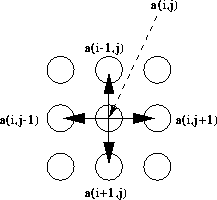

Successive Over Relaxation (or Red-Black Relaxation) is a common technique in HPF kernels. BLOCK distribution is perfect as most calculations will involve all local calculations. It is only the calculation of the border elements that require elements from other processors.
DO j = 2,n-1
DO i = 2,n-1
a(i,j)=(omega/4)*(a(i,j-1)+a(i,j+1)+ &
a(i-1,j)+a(i+1,j))+(1-omega)*a(i,j)
END DO
END DO
The calculation of a(i,j) uses its 4 neighbours (see Figure 22).

Figure 22: Access Patterns in Successive Over Relaxation
Since one element accesses its four closest neighbours when being updated BLOCK distribution in both dimensions can be seen to be the most effective distribution.
Now try this question